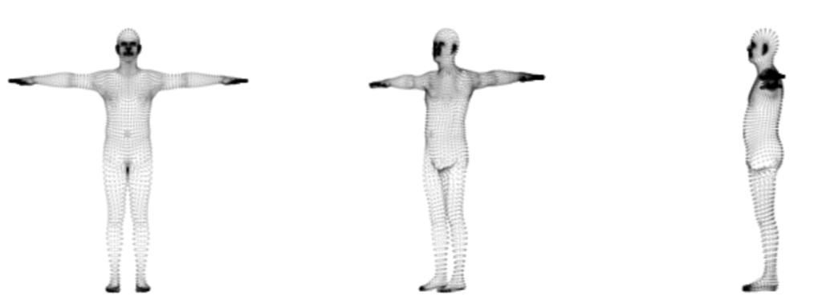

My slides on this paper for the CS 637 Computer Vision II class.
Problem Statement
- Aims at mapping human pixels from an image to 3D surface of a template human body
- Task involves object detection, pose estimation, part and instance segmentation
3D Human Template
- SMPL – A Skinned Multi-Person Linear Model
- Per part UV Unwrapping to regress UV coordinates


Overall Pipeline
Good Techniques used in the paper:
- Cascading
- Averaging background
- Perform evaluation at multiple scales
- Using a Teacher Network (FCNN) to boost annotations
The Dataset
- Image to surface correspondences on 50k persons from COCO dataset
- Total 5 million correspondences => ~100 per person
- Max 14 correspondences per body part
Labelling Errors from annotators
- Large errors ~8cm in labelling on torso and thighs due to lack of distintictive points.
Results
Application: Texture Transfer